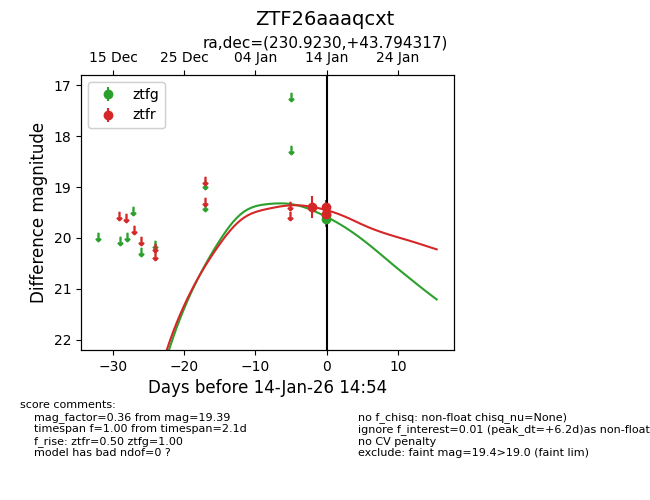
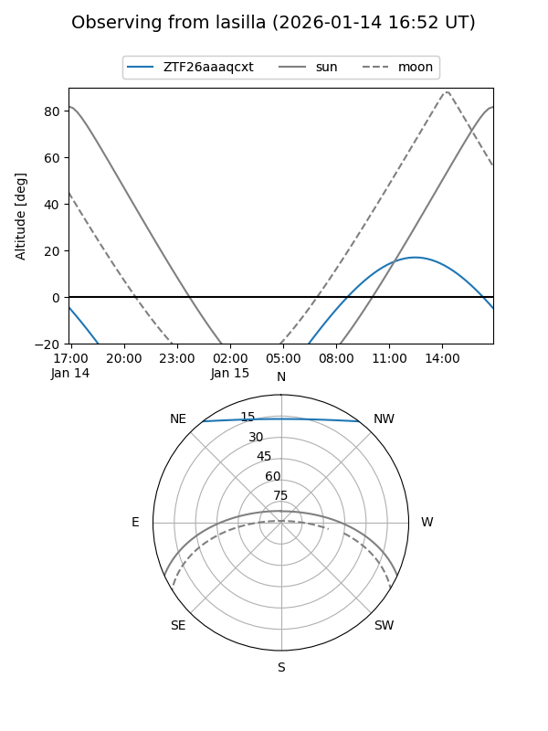
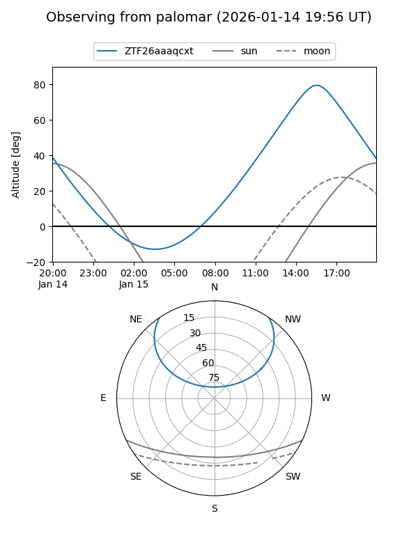
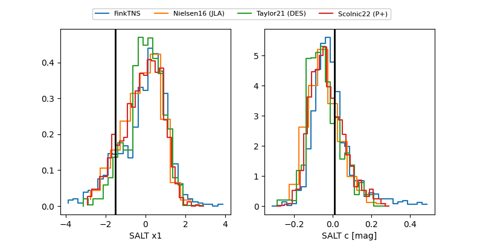

ZTF26aaaqcxt
Target ZTF26aaaqcxt at 2026-01-14 14:55
Aliases and brokers:
FINK: link
Lasair: link
ALeRCE: link
alt names
ZTF26aaaqcxt (ztf,fink_ztf)
Coordinates:
equatorial (ra, dec) = 230.9230,+43.79432
equatorial (HMS+DMS) = 15:23:41.52,+43:47:39.54
galactic (l, b) = (71.6519,+55.22196)
Flags:
Photometry:
last ztfg=19.54, ztfr=19.39
2 ztfg, 3 ztfr detections
Lightcurve

Visibility


Additional plots
